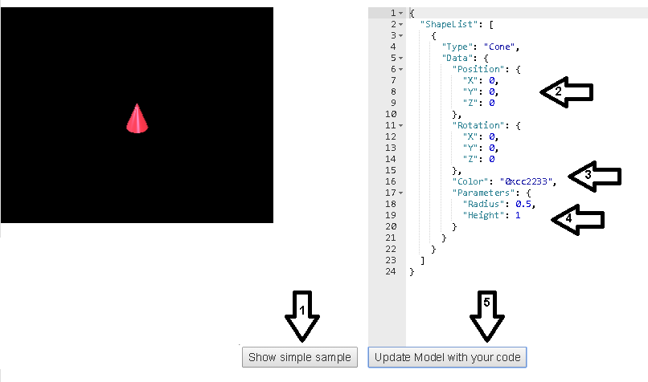

Note: Being familiar with JSON, basic 3D terms, and RBG colors will help when working with scenes, but here are the basics.
The scene is defined in a JSON-based format called S4F. It's pretty simple -- it only defines a few shape types, positions, rotation, and color. Positions and rotations are defined with X,Y,Z coordinates, and colors are defined with hex-based strings. For example, 0xff0080 is 100% red, 0% green, and 50% blue (reddish-purple).
Try these steps on the main page (see screen shot numbed items below)
If all went well, you should now have a slightly-off center, taller cone, that is greenish rather than reddish.
Note that the editor will attempt to correct for basic JSON syntax errors, but it's not foolproof. Note that any decimals less than one must start with a leading zero, e.g. 0.5, not .5.
Once you've gotten some practice with this, try looking at the 'General Scene.' Note that the main 'ShapeList' node contains an array (defined by square brackets[]) with comma-separated shape objects. Try creating some boxes, cones, cylinders, planes, or even extrusions. Note that the ''"''Parameters'"' section of the different shape types is different depending on the shape. (A rectangle has a length, width, and depth, while a cone has height and a radius.)
Try editing some of the points in 3d space in an animation track in the 'AnimationTracks' section of the scene, click 'Update,' and click 'Animate.' Also try adding, removing, and changing the track assignments of individual objects, e.g. 'AnimationTrack' = 'Track2'
Back to the main page.